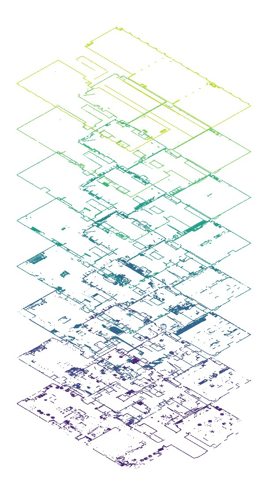
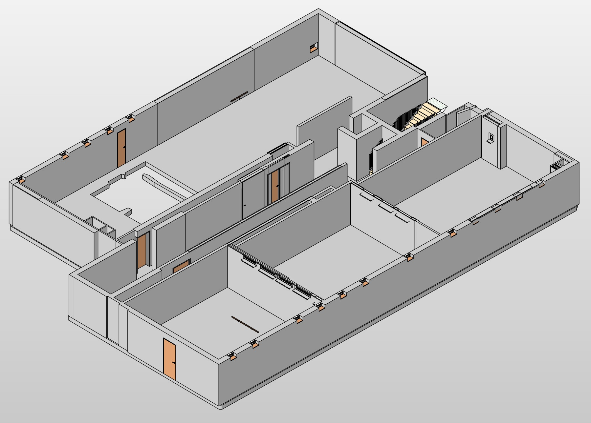
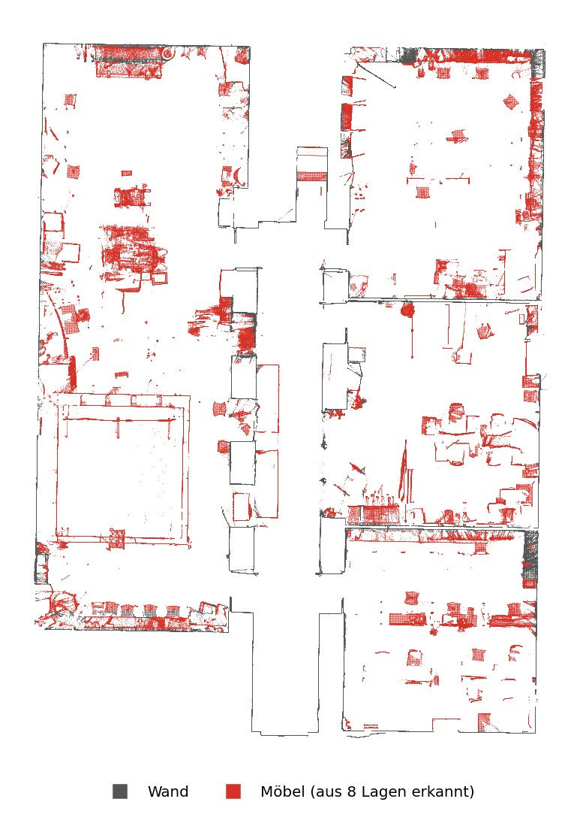
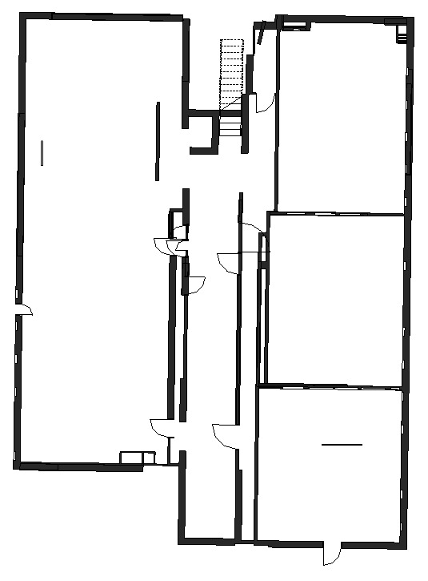
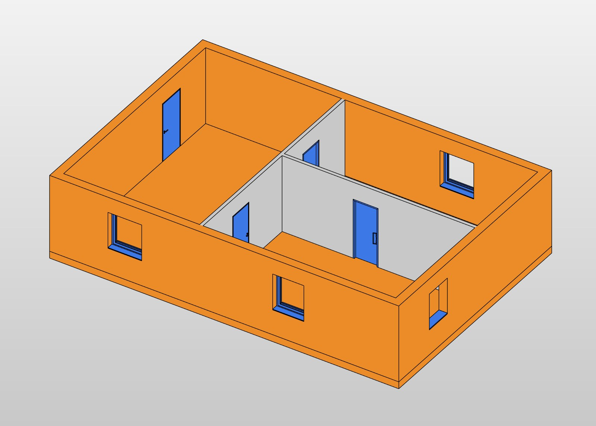
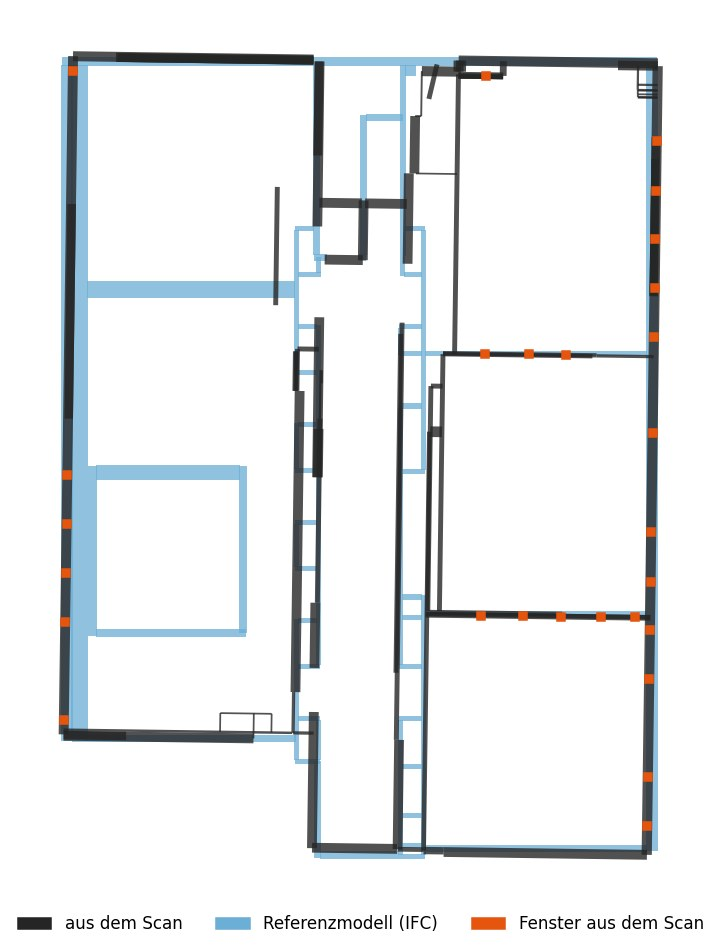

1
Analysieren
Senkrechte Schnitte finden Geschosse und Decken. Acht waagrechte Lagen vom Boden bis unter die Decke zeigen, was wo steht. Ein Geschoss in rund 20 Sekunden.

Revit-MCP
Ein Team aus KI-Agenten liest die Punktwolke, versteht die Bauteile und baut ein natives Revit-Modell: nach einer verbindlichen Modellierungsrichtlinie, mit unabhängiger Prüfung, jedes Bauteil als gemessen oder angenommen gekennzeichnet.
Punktwolke (E57, PLY, LAS)Revit 2025 / 2027pyRevit-Agentenlaufzeitläuft lokal, Daten bleiben im Haus
Problem
Für Umbau, Betrieb und Unterhalt braucht es ein Modell des Bestands. Heute zeichnet jemand die Punktwolke Wand für Wand in Revit nach. Das ist teuer, langsam, und Fehler fallen erst spät auf.
Umsetzung
Senkrechte Schnitte finden Geschosse und Decken. Acht waagrechte Lagen vom Boden bis unter die Decke zeigen, was wo steht. Ein Geschoss in rund 20 Sekunden.

Eine Wand reicht vom Boden bis unter die Decke, ein Möbel hört darunter auf. So trennt die Maschine Schränke, Tische und Geräte von den Wänden, findet Wände hinter Einbauschränken und Fenster in Fassadennischen.

Die Agenten bauen in Revit nacheinander: Geschosse, Typen, Wände und Decken, Türen, Fenster, Räume. Native Elemente, keine Netze, kein Import.

QS
Jede Regel hat eine Nummer und, wo möglich, eine automatische Prüfung in Revit.
Liest das fertige Modell aus Revit zurück und misst es gegen den Plan. Er baut nichts selbst.
Jede Wand trägt, ob ihre Stärke und Höhe gemessen oder angenommen ist.
Synthetische Testgebäude mit bekannter Wahrheit, bevor echte Daten drankommen.

Agenten
Organisiert wie ein Planungsteam: eine Leitung mit Freigaben, Spezialisten je Gewerk, ein unabhängiger Prüfer. Immer nur einer arbeitet in Revit.
Ergebnisse
Gemessen an einem offenen Datensatz mit Referenzmodell: CRAS Labs der Universität Porto, ein Geschoss mit Büros, Werkstatt, Labor und Flur (585 Mio. Punkte). Vor den acht Lagen fand die Route 67 % der Wände, 66 % davon richtig. Zahlen aus echten Projekten bleiben privat.

Punktwolke und IFC der Beispielbilder: CRAS Labs, FEUP Porto; Abreu, Souza, Pinto, Matos, Pires (2023), Labelled Indoor Point Cloud Dataset for BIM Related Applications, Data 8(6) 101, zenodo.org/records/7948116, CC BY 4.0. Bilder bearbeitet (Schnitte, Klassifizierung, Revit-Modell).